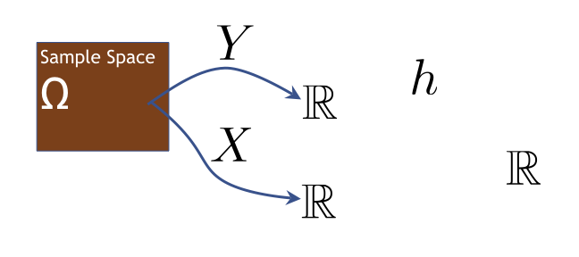
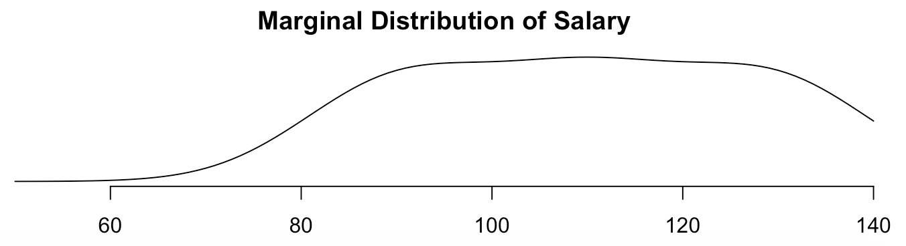
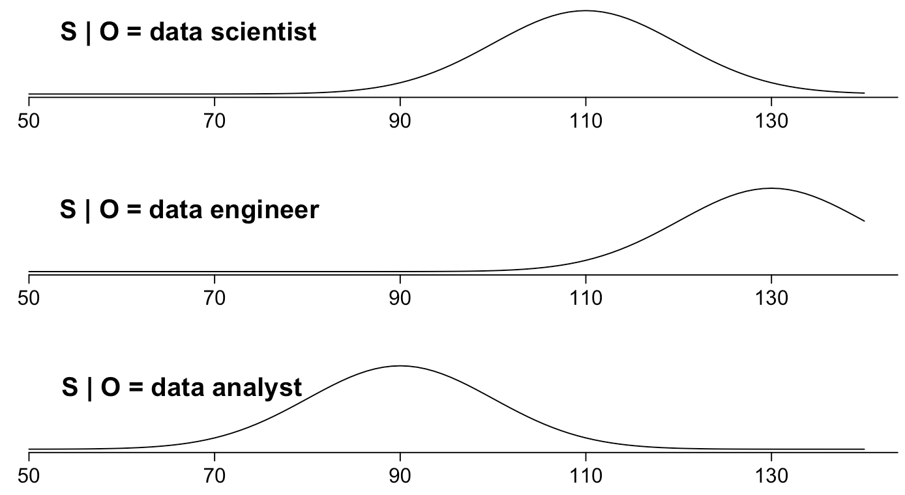
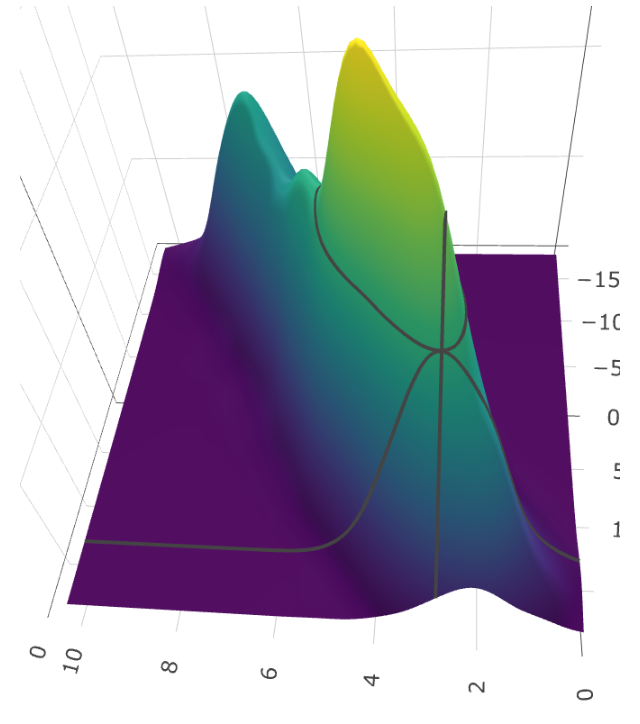
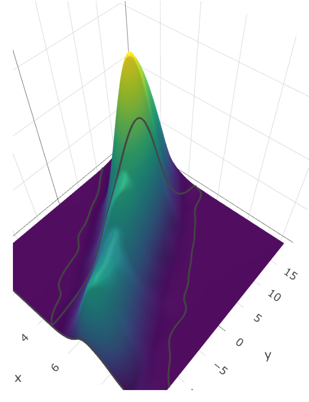
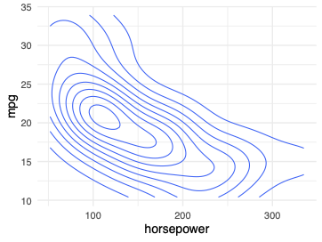
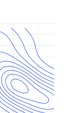
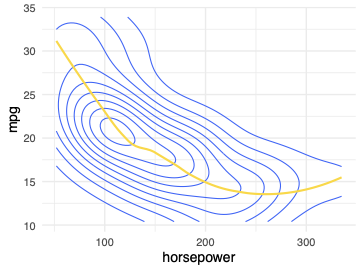
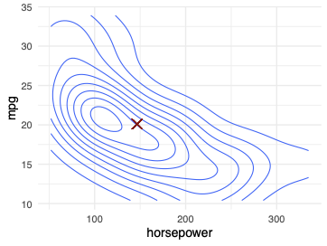

Week 4
Conditional Expectation and the Best Linear Predictor
UC Berkeley, School of Information
Motivating Examples
Motivating Examples
Given a random variable X and another random variable
Y , you often want to make predictions about Y that are as good as possible. - Given some budget, what will an organization’s head count be next year? - Given a citizen’s age and income, how likely are they to vote? - Given a set of sounds picked up by a microphone, what are the chances that someone in the room has fallen down (Sound Flux, 2019)? - Given a set of voxels, does an image contain a malignant tumor?
Plan for the Week
Two sections:
- Conditional expectations
- Best predictors and best linear predictors
Plan for the Week (cont.)
At the end of this week, you will be able to:
- Derive statements describing relationships among random variables
- Understand how to divide variance into a part that is explained and an error component that you have not explained
- Understand how a best linear predictor uses information from a set of random variables to help us predict the value of an outcome
Conditional Expectation
Introduction to Conditional Expectation
Introduction to Conditional Expectation, Part I
To this point, we have characterized random variables with three concepts:
- The Expected Value , \(\E[X]\)
- The Variance , \(\V[X]\)
- The Covariance , \(\cov[X,Y]\)
But, when there is dependence between two random variables \(X\) and
\(Y\) , then if we know something about \(X\) , we might be able to make a new contextualized statement about the conditional distribution .
Introduction to Conditional Expectation, Part II
We began the week with the questions:
- Given some budget, what will an organization’s head count be next year?
- Given some attributes about a citizen, how likely are they to vote?
- Given a set of sounds picked up by a microphone, what are the chances that someone in the room has fallen down (Sound Flux, 2019)?
- Given a set of voxels, does this image contain a malignant tumor?
Introduction to Conditional Expectation, Part III
But, those were all conditional statements!
Rather than saying, ``On average, 78 % of the electorate votes in any given election,’’ we can instead say:
``Among people 29 or younger, 41 % voted in the last presidential election’’
``Among people who have voted before, 90 % will vote in any given election’’
This is our goal in data science! Use information to make more informed,
better statements.
Conditional Expectation Operator
Introduction to Conditional Expectation, Part I
- Recall expected values: [ = {-}^{} y f{Y} dy ]
- The expected value of \(Y\) , \(\E[Y]\) , is the integral of the product of { the value \(y\) and the probability density function for that value }
- Expectation is an operator that maps from \(\R^{n} \to \R\)
Introduction to Conditional Expectation, Part II
- The conditional expectation operator of \(Y\) given \(X\) , \(\E[Y|X]\) holds a similar form: [ = {-}^{} y f{Y|X}(y|x) dy, X [X] ]
- Recall also that expectation is an operator.
- So, too, is conditional expectation.
Introduction to Conditional Expectation, Part III
Conditional Expectation Demo
Software Demo: Conditional Expectation
Note: This is a lecture + software demo. We’re just placing this here for organization.
Learnosity: Conditional Expectation
Conditional Expectation Example
The following table shows the joint probability distribution for discrete random variables \(X\) and \(Y\) .
- Compute: \(\E(Y|X=1)\)
- Compute: \(\E(Y|X=2)\)
Reading: Conditional Expectation Operator
Reading: Conditional Expectation Operator
Read page 67 through the first half of 69 (including Theorem 2.2.14)
Properties of Conditional Operators
Understanding Conditional Operators
Conditional Expectation \(\longrightarrow\) \(\E[ \text{Conditional Distribution} ]\) Conditional Variance \(\longrightarrow\) \(\V[ \text{Conditional Distribution} ]\)
Formulas for Conditional Variance
\(\V[Y|X=x] = \E \big[(Y- \E[Y|X=x])^2 \big| X=x \big]\) \(\V[Y|X=x] = \E \big[ Y^2 | X=x \big] - \E \big[Y|X=x\big]^2\)
Understanding Conditional Lotus

- Condition on \(X=x\) .
Theorem: Conditional LOTUS
Given discrete random variables \(X\) and \(Y\) with joint pmf \(f\), and \(h:\R^2 \rightarrow \R\), \(\E \big[h(X,Y) \big| X=x \big] = \sum_y h(x,y)f_{Y|X}(y|x),\) For all \(x \in \text{Supp}[X].\) Given continuous random variables \(X\) and \(Y\) with joint pdf \(f\), \(\E \big[h(X,Y) \big| X=x \big] = \int_{x=-\infty}^\infty h(x,y)f_{Y|X}(y|x)dy,\) for all \(x \in \text{Supp}[X].\)
Theorem: Linearity of Conditional Expectation
Given random variables \(X\) and \(Y\) and \(a,b \in \R\), then for all \(x \in \text{Supp[X]}\), \(\E \big[ aY + b \big| X=x \big] = a\E \big[ Y \big| X=x \big] + b\) Moreover, given \(g,h:\R \rightarrow \R\), then for all \(x \in \text{Supp[X]}\), \(\E \big[ g(X)Y + h(X) \big| X=x \big] = g(x)\E \big[ Y \big| X=x \big] + h(x)\)
Conditional Expectation Example
Simplify: \(\E[ XY | X=x]\)
Demonstration of the Conditional Expectation Function
Demonstration of the CEF
Note: This is a Lecture and Software Demo, we’re just placing it here for organization.
Reading: Conditional Expectation Function
Reading: Conditional Expectation Function
- Read the second half of page 69, through page 71, stopping before the Law of Iterated Expectations. % \paul{switching to the function view seems like a big % turn, % maybe save that reading till we make the jump?}
- These pages are tough, so we’re going to whiteboard theorems 2.2.11 and 2.2.12 on the other side of your reading.
- You can probably skip theorem 2.2.14 without great problem.
- Focus specific attention on definition 2.2.15.
Learnosity: Write a Conditional Expectation Function
Introduction to the Law of Iterated Expectations
Law of Iterated Expectations
Earlier, we worked with theorem 1.1.13 , The law of total probability , which stated:
Theorem 1.1.13: the law of total probability
If $\{A_{1}, A_{2}, A_{3}, \dots\}$ partition $\Sigma$,
$B \in S$, and $P(A_{i}) > 0, \forall i$ then:
\[
P(B) = \sum_{i} P(B|A_{i})P(A_{i})
\]- Useful because we can break the overall probability into smaller ``chunks’’ whose probabilities might be easier to know.
- The Law of Iterated Expectations is a generalization and reapplication of this principle.
Reading: Law of Iterated Expectations and Total Variance
Reading: Law of Iterated Expectations
Read pages 72, 73, and the top of 74, stopping before theorem 2.2.19.
Lightboard: Law of Iterated Expectations
Law of Iterated Expectations
Law of Total Variance
Splitting Variance
Theorem 2.2.18: the law of total variance
For random variables $X$ and $Y$:
\[
\V[Y] = \V\big[\E[Y|X]\big] + \E\big[\V[Y|X]\big]
\]Key question: How much of the variance in \(Y\) can be explained by \(X\) ?
Splitting Variance: Example
\(S\) represents salary.
\(O\) represents occupation (1 = data scientist, 2 = data engineer, 3 = data analyst).

\(\V[S] = 366\) . How much of this is explained by occupation?Salary Conditioned on Occupation

Components of Variance
\(\V[S]\) is the sum of two components.
- Explained variance: \(\V \big[ \E[S|O] \big] = 266\) - Measures how much information \(O\) gives about \(S\)
- Can also be called systematic variance
- Unexplained variance: \(E\big[V[S|O]\big]=100\) - Measures how much extra variation is there in \(S\) that we can’t explain with \(O\)
- Can also be called error variance
Law of Total Variance Implications
Suppose that you can divide data into groups along (possibly) two dimensions.
A dimension that does not explain any variation in outcomes
A dimension that explains variation in outcomes
As you’re going to see in the next coding exercise, through this identity, if you can produce groups that have different means, you will necessarily produce a smaller \(\E \big[ \V[Y|X] \big]\) .
Learnosity: Variance Breakdown
Learnosity: Variance Breakdown
Note: This is a learnosity activity. We’re just including it here for organization.
Best Predictors
Deviations From the CEF
More Comments for Alex
Joint Density Function
For this section, we will work first with the same joint distribution function throughout.
\[\begin{align*} X & \sim U(min = 0, max = 10) \\ W & \sim N(mean = 0, sd = 1) \\ Y &= 10 - 2\cdot X + W \end{align*}\]
Where \(X\) and \(W\) are independent.
Joint Density Function (cont.)


Deviations from the CEF
Deviations from the CEF
Suppose that $\epsilon = Y - \E[Y|X]$ is the distance between my
estimate within a grid and the actual value. \note[item]{Notice
that $Y$ is the actual continuous elevation that is modeled by
the function of X and Y, but that $\E[Y|X]$ is the function that
maps the CEF at the point $X=x$}- Inside each of the grids, how far, on average, will I be from
the true elevation? $\E[\epsilon|X] = ?$- Across the whole ridgeline, how far, on average, will I be from the true elevation? \(\E[\epsilon] = \E[\E[\epsilon?|X]] =\) ?
- Within each of the grids, what features will shape how close you are, on average? \(\V[\epsilon | X] = ?\)
- Across the whole ridgeline, what features will shape how close you are, on average? \(\V[\epsilon] = ?\)
Reading: Deviations from the CEF
Deviations from the CEF
- Begin by reading from where we left off previously on page 74 to the middle of page 76, stopping when the discussion turns to linear restrictions.
- Try to work through, on your own, the proof of why the CEF is the best (minimum MSE) estimator of Y.
- In the proof of theorem 2.2.20, the authors add \(\E[\epsilon | X]\) seemingly from nowhere. This is a legal move because in 2.2.19, you have derived that \(\E[\epsilon | X] = 0\) .
Best Predictors
Predictors are Functions
Definition: Predictor
Given random variables \(X\) and \(Y\), a predictor for \(Y\) is a function, \(g:\R \rightarrow \R\), such that \(g(X)\) is regarded as a guess for \(Y\).
- Given a value \(X=x\) , a predictor suggests a single value for \(Y\) .
- Define error as \(\epsilon = Y - g(X)\) .
Predictors and Errors

Choosing a Good Predictor
Idea: Minimize mean squared error, \(\E[\epsilon^2]\) .
Importance of the CEF
Theorem: The CEF Minimizes MSE
Given random variables \(X\) and \(Y\), the CEF \(\E[Y|X]\) has the smallest MSE out of all predictors of \(Y\).
Lightboard: The CEF Minimizes MSE
The CEF minimizes MSE

Best Linear Predictors
Complexity of the CEF

Linearizing the Predictor

Choosing a Linear Predictor
Definition: The Best Linear Predictor (BLP)
Given random variables \(X\) and \(Y\), the best linear predictor (BLP) for \(Y\) is the function \(g:\R \rightarrow \R\), \(g(X) = \alpha + \beta X\), with coefficients given by,
\(\text{argmin}_{\alpha, \beta} \E \Big[ \big( Y - (\alpha + \beta X) \big)^2 \Big]\)
Solving for the BLP
Theorem: The BLP Solution
Given random variables \(X\) and \(Y\), the best linear predictor for \(Y\) is given by \(g(X) = \alpha + \beta X\), where,
\(\beta = \frac{\cov[X,Y]}{\V[X]}, \qquad \alpha = \E[Y] - \frac{\cov[X,Y]}{\V[X]} \E[X]\)
Reading: The Best Linear Predictor
Reading Assignment: Linear Approximation
Read to the middle of page 79, stopping before you get to example 2.2.23.
Moment Conditions
Moment Conditions
The BLP is given by
\(\text{argmin}_{\alpha, \beta} \E \Big[ \big( Y - (\alpha + \beta X) \big)^2 \Big]\)
Moment Conditions - Solution
The BLP is given by
\(\text{argmin}_{\alpha, \beta} \E \Big[ \big( Y - (\alpha + \beta X) \big)^2 \Big]\) \(0 = \frac{\partial \E[\epsilon^2]}{\partial \alpha} = \E \left[ \frac{\partial \epsilon^2}{\partial \alpha} \right]
= \E \left[ 2\epsilon \frac{\partial \epsilon}{\partial \alpha} \right] = -2 \E[\epsilon]\) \(0 = \frac{\partial \E[\epsilon^2]}{\partial \beta} = \E \left[ \frac{\partial \epsilon^2}{\partial \beta} \right]
= \E \left[ 2\epsilon \frac{\partial \epsilon}{\partial \beta} \right] = -2 \E[\epsilon X]\)
Version 1:
- \(\E[\epsilon] = 0\)
- \(\E[\epsilon X] = 0\)
Version 2:
- \(\E[\epsilon] = 0\)
- \(cov[\epsilon, X] = \E[\epsilon X] - \E[\epsilon] \E[X] = 0\)
What about \(\E[\epsilon | X]\) ?
Lightboard: Understanding Moment Conditions
Understanding Moment Conditions
- \(0 = \E[\epsilon]\)
- \(0 = \cov[\epsilon, X]\)

Understanding Moment Conditions - Solution
- \(0 = \E[\epsilon] = \E \left[ Y - (\alpha + \beta X) \right] \implies \E[Y] = \alpha + \beta \E[X]\)
- \(0 = \cov[\epsilon, X]\)
Lightboard: The BLP Solution
The BLP Solution
The BLP is defined by the moment conditions:
- \(0 = \E[\epsilon]\)
- \(0 = \E[\epsilon X]\)
The BLP Solution - Solution
The BLP is defined by the moment conditions:
- \(0 = \E[\epsilon] = \E \left[ Y - (\alpha + \beta X) \right] = \E[Y] - \alpha - \beta \E[X]\) . \(\alpha = \E[Y] - \beta \E[X]\) .
- \(0 = \E[\epsilon X] = \E \left[ \big( Y - (\alpha + \beta X) \big) X \right] = \E[XY] - \alpha \E[X] - \beta \E[X^2]\) \(= \E[XY] - \Big( \E[Y] - \beta \E[X] \Big) \E[X] - \beta \E[X^2]\) \(= \E[XY] - \E[X] \E[Y] + \beta \E[X]^2 - \beta \E[X^2]\) \(= \cov[X,Y] - \beta \V[X]\)
\(\beta = \frac{\cov[X,Y]}{\V[X]}\) \(\alpha = \E[Y] - \frac{\cov[X,Y]}{\V[X]} \E[X]\)
Reading: Multivariate Generalizations
Reading: Multivariate Generalizations
Read section 2.3, Multivariate Generalizations.
Best Linear Predictors in Higher Dimensions
Linear Predictors in Higher Dimensions
Definition: Linear Predictor
Given random variable \(Y\), and random vector \(\bs{X} = (1, X_1, X_2, X_3,...,X_k)\) A linear predictor for \(Y\) is a function, \(g:\R^k \rightarrow \R\) of the form, \(g(x_0, x_1,x_2,...,x_k) = \beta_0 x_0 + \beta_1 x_1 + \beta_2 x_2 + ... + \beta_k x_k\) such that \(\hat Y = g(1, X_1, X_2,...,X_k)\) is regarded as a guess for \(Y\).
Interpreting Model Coefficients
\[\begin{align*} \hat{Y} &=\beta_0 + \beta_1 X_1 + \beta_2 X_2 + ... + \beta_k X_k\\ \frac{\partial \hat{Y}}{\partial X_i} &= \beta_i, \quad \ \ \Delta \hat{Y} = \beta_{i} \cdot \Delta X_{i} \end{align*}\]
All else equal
- If \(X_{i}\) changes by \(\Delta X_{i}\) , the prediction \(\hat{Y}\) changes by \(\beta_{i} \cdot \Delta X_{i}\) , if the other \(X\)’s are held constant .
Interpreting Model Coefficients - Example
Does this model say peacocks with longer tails fly slower?
[ = 4.3 - 1.2 + 0.8 ]

Best Linear Predictors in Higher Dimensions
Definition: Best Linear Predictor
Given random variable \(Y\), and random vector \(\bs{X} = (1, X_1, X_2, X_3,...,X_k)\) The best linear predictor for \(Y\) is the function, \(g:\R^{k+1} \rightarrow \R\), \(g(x_0 ,x_1,x_2,...,x_k) = \beta_0 x_0 + \beta_1 x_1 + \beta_2 x_2 + ... + \beta_k x_k\), with coefficients given by, \(\text{argmin}_{\beta_0,...,\beta_k} \E \Big[ \big( Y - (\beta_0 + \beta_1 X_1 + ... + \beta_k X_k) \big)^2 \Big]\)
Moment Conditions in Higher Dimensions
Apply first-order conditions:
\(0 = \frac{\partial \E[\epsilon^2]}{\partial \beta_0} = \E \left[ \frac{\partial \epsilon^2}{\partial \beta_0} \right] = \E \left[ 2\epsilon \frac{\partial \epsilon}{\partial \beta_0} \right] = -2 \E[\epsilon]\)
For \(j>0\) , \(0 = \frac{\partial \E[\epsilon^2]}{\partial \beta_j} = \E \left[ \frac{\partial \epsilon^2}{\partial \beta_j} \right] = \E \left[ 2\epsilon \frac{\partial \epsilon}{\partial \beta_j} \right] = -2 \E[\epsilon X_j]\)
Version 1:
- \(\E[\epsilon] = 0\)
- \(\E[\epsilon X_j] = 0\)
Version 2:
- \(\E[\epsilon] = 0\)
- \(cov[\epsilon, X_j] = 0\)
The BLP Solution in Higher Dimensions
\(\bs{\beta} = \E \big[(\bs X^T \bs X)^{-1} \big] \E \big[ \bs X^TY\big]\)
Looking Ahead
- The Best Linear Predictor is also called the Population Regression Function.
- Linear Regression: An algorithm for selecting a linear predictor given a sample of data.
- Ordinary Least Squares Regression: An algorithm for estimating the best linear predictor.